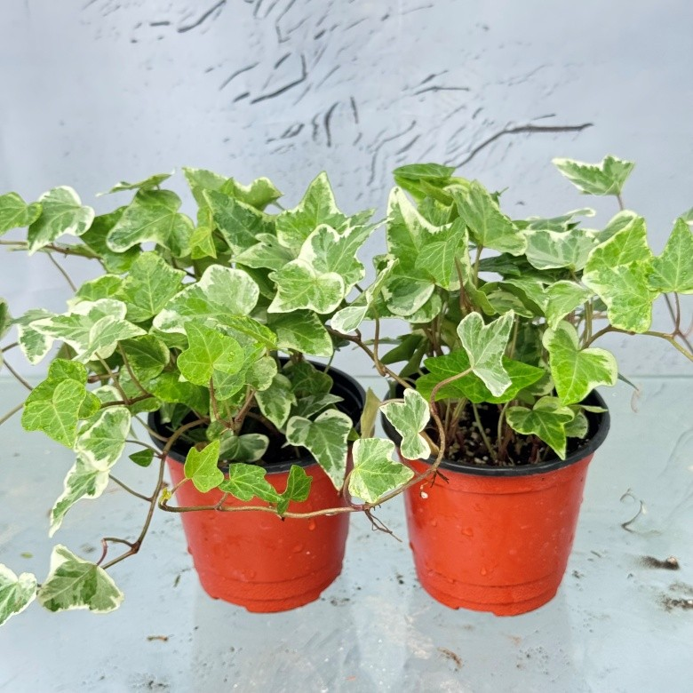
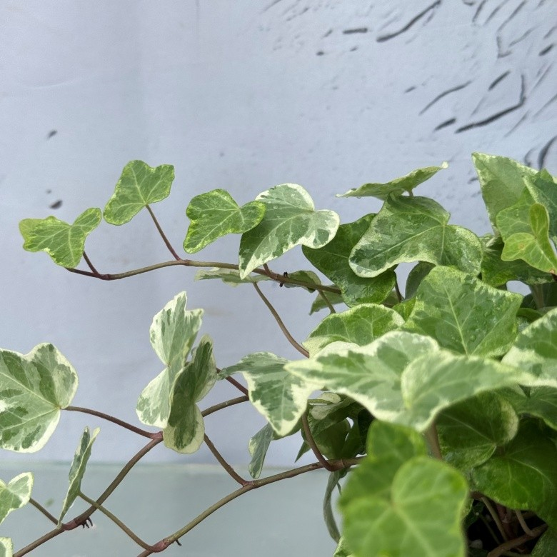
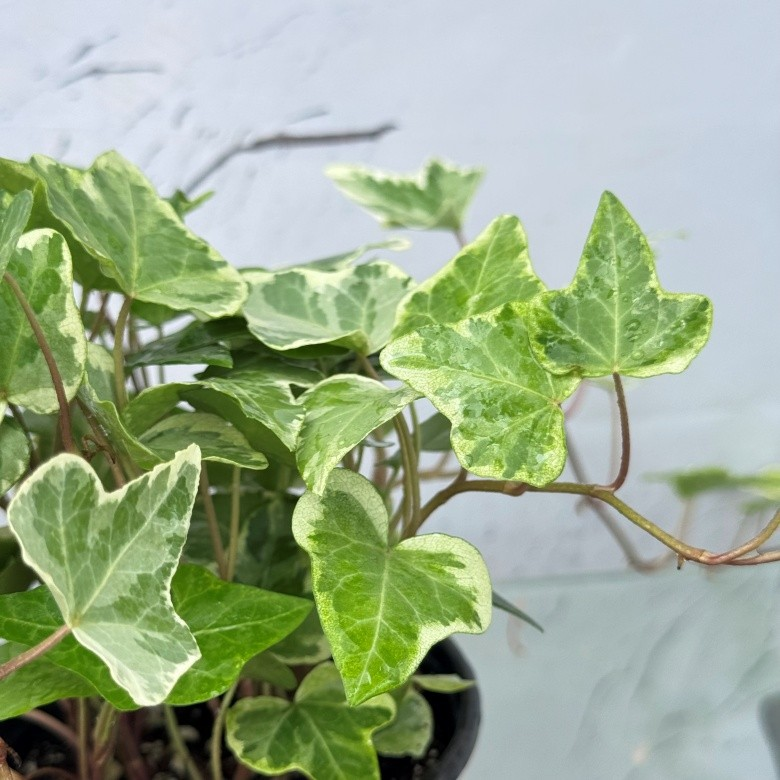

작고 싱그러운 무늬 잎이 매력적인

초록 잎 가장자리에 크림색 무늬가 들어간 덩굴성 식물입니다.
줄기가 자연스럽게 늘어지며 자라 창가, 책상, 선반 위에 두기 좋습니다.


| 높이 | 15~20cm |
| 화분 지름 | 10cm |
| 구성 | 무늬아이비 2개 |
| 빛 | 밝은 간접광이 드는 곳이 좋습니다. 빛이 부족하면 무늬가 옅어질 수 있습니다. |
|---|---|
| 물 | 겉흙이 마르면 화분 아래로 물이 흘러나올 만큼 충분히 주세요. |
| 온도 | 서늘한 환경을 좋아합니다. 한여름 고온다습한 환경은 피해 주세요. |
| 통풍 | 바람이 잘 통하는 곳에 두고, 건조할 때는 잎에 분무해 주세요. |
식물 특성상 잎 무늬, 크기와 수형은
개체마다 조금씩 다를 수 있습니다.
아이비는 섭취 시 탈이 날 수 있는 성분이 있어
반려동물과 어린이의 손이 닿지 않는 곳에 두어 주세요.